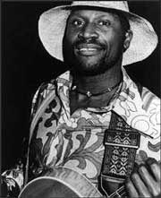
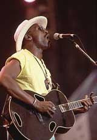

Сейчас почти каждый, кто возвращается из гостевой или деловой поездки по Штатам, особенно из Нью-Йорка, обязательно рассказывает, какие шоу ему посчастливилось там увидеть. Но все эти шоу - ничто по сравнению с концертом Таджа Махала! “Нью-Йорк целиком стоит вверх ногами от его выступлений, и попасть на них - большая проблема!” - восклицают очевидцы.Тадж уже 12 лет проживает с семьей на Гавайях, но постоянно объявляется в Нью-Йорке.
- Это самый стоящий город для испытания своих возможностей. Нью-Йорк не просто деловая столица мира - он всегда впереди времени, если ты здесь смог отвоевать хотя бы кусочек признания, то значит ты уже признан повсюду. Это проверенная десятилетиями истина, - утверждает Тадж Махал.
Хотя на самом-то деле его зовут Генри Сент-Клер Фредерикс, и он сам родом из нью-йоркского Гарлема.
"Taj Mahal & The Elektras" - так называлась первая группа, в которой юный Генри лидировал гитаристом и вокалистом. На дворе стоял 1960-й. Ему только исполнилось двадцать, и он прилежно учился в Бостоне. Не в музыкальном колледже Беркли, а на сельскохозяйственном в Массачусетском университете. Вечерами в студенческих кафетериях группа исполняла ритм-энд-блюз, а днем все были сами студентами. Затем, получив дипломы специалистов-животноводов, группа "Taj Mahal & The Elektras" разъехалась по сельскохозяйственной Америке. Из них всех только Генри и смог побороть в себе животновода и остаться блюзменом. Название группы он все же частично сохранил для своего псевдонима, и с тех самых пор зовется Таджем Махалом.
В 1964-м, где-то в Бостоне, Тадж повстречался с Раем Кудером и основал с ним легендарнейшую группу "The Rising Sons". В две cупер-гитары они прогремели так громко, что Тадж быстро смог начать свое сольное становление, и первые его три альбома “Taj Mahal” (1968), “The Natch’l Blues” (1968), “Giant Step” (1968) - все как один четырехзвездные. Тогда Тадж и сам побывал в звездах - мы видим его в архивном киноконцерте “Rolling Stones Rock’n’Roll Circus 1968”, окруженного Джоном Ленноном, Джорджем Харрисоном, группами “Rolling Stones”, "Jethro Tull" и "The Who". Это было время, когда Джон Фогерти изо всех сил старался петь так же, как Тадж, и у него это почти получилось.
Все-таки рок-звезды из Таджа не вышло. Скорее всего потому, что в нем неожиданно проснулась застарелая страсть к джазу, затем к соул и вообще к любому оттенку черной музыки: от фолк-блюза Дельты, госпел, спиричуэлз и регги до креольской и, наконец, гавайской и даже экваториально-африканской и прочей геомузыкальной экзотики.
- World music -это мое детское хобби, - говорит Тадж. - Не та искусственно синтезированная world music в современном понятии, а в самом прямом смысле - музыка Планеты.
У нас дома стоял громадный коротковолновый радиоприемный аппарат. Отец увлекался дальним приемом. Он и меня научил, какие ручки крутить, где отыскать Рио, а где Папеэте, где Даккар, а где Москву. Сутками я сидел в наушниках и обшаривал эфир нашего шарика. Какие только языки, голоса, песни и просто диковинные звуки не попадались мне! В 40-х годах такое все еще казалось фантастикой. Похоже, это осталось самым сильным моим впечатлением в жизни.

Скорее, похоже, что детское хобби - коллекционирование звуков Земли - помогло Таджу собрать отличную коллекцию, наглядно и последовательно выставленную на обозрение в серии его блистательных альбомов 90-х годов. Здесь есть самый корневой блюз почв континентов и островов. И пусть даже не совсем блюз, но зато всегда корневой. Тадж, пожалуй, наигибчайший и самый вселенский блюзмен в мире, и последние лет двадцать он собирал музыку Земли не по эфиру, а в основном разъезжая и проживая в разных местах, иногда за пределами Штатов - например, на островах Карибского моря, в Пуэрто-Рико, Тринидаде и на Виргинских островах. Затем на целых 12 лет Тадж поселился со своей семьей на Гавайях. Не в цивилизованном американизированном Гонолулу, а на небольшом островке, где все еще сохранилась гавайская речь и культура. Все эти 12 лет он записывался в студиях Лос-Анджелеса и Нью-Йорка, и только одну свою работу он целиком посвятил Гавайям и гавайской музыке. И вот совсем недавно его обуяла страсть к другому удаленному району Земли - к Африке. Эта на сегодняшний день самая последняя геомузыкальная затея Таджа Махала носит глобальный научно-исследовательский характер - он отважился копнуть на триста пятьдесят лет вглубь истории африканской музыки только для того, чтобы выяснить, какою она была на западном побережье Африки в момент, когда изрядная часть жителей этого побережья отправлялась в трюмах работорговцев в Америку. И какою была музыка африканцев, еще только приплывших в Америку. Хотя, возможно, один такой трехмесячный рейс в темном и вонючем трюме мог много изменить в музыкальном самовыражении африканцев.- Музыка Африки и музыка африканцев Америки разошлась в разные стороны где-то триста пятьдесят лет назад и развивалась в весьма несхожих условиях. И теперь мало что имеет общего. И все-таки сходство есть. И как дети имеют что-то общее со своими родителями, так и здесь оно также имеется, - рассказывает Тадж Махал. - В последнем моем альбоме микрофоны зафиксировали трогательную встречу трехсотлетнего блудного сына с давно потерянными родителями - наконец-то круг замкнулся.
- У меня есть много идей всякого рода. И все они ждут своего часа, но вот что я вам скажу: после сессии с малийскими музыкантами, если я даже и вовсе не притронусь к гитаре до конца своих дней, то уже и расстраиваться не стану.
Эта сессия дала новейший альбом под африканским названием “Kulanjan”. Он весь напоен звуками древней традиционной культуры Мали “кора”. Именно в том виде, какою была ее музыка триста пятьдесят лет назад в Африке, а затем видоизменялась в трюмах работорговцев и на табачных плантациях Вирджинии. (Подобное исследование последний раз еще в 70-х проделал Квинси Джонс в своем научпоп-шоу “Roots”.)
Если бы Тадж не выбрал однажды путь музыки, то мог бы стать видным ученым.
Он бегло говорит и читает на пяти иностранных языках. Кстати, читает он не беллетристику, а философские сочинения и, как все философы, любит посидеть с удочкой у безлюдного берега, а также покопаться в саду и огороде. Он умеет приготовить изысканные блюда. Заботливый отец и преданный муж, он уделяет семье времени не меньше, чем музыке. А времени у него хватает еще и на исполнение ролей в кинофильмах и даже на создание сценариев к этим фильмам. И хотя здесь обошлось без “Оскара”, Таджу удалось взять “Грэмми” за создание музыкального сценария к бродвейскому мюзиклу "Кость мула", поставленному по одноименной пьесе Ленгстона Хьюза.
В премиях “Грэмми” Тадж не испытывает особого дефицита. Из 36 его альбомов 6 номинированы на эту престижную награду. Это не считая еще нескольких "Грэмми" за детские альбомы - он страстный почитатель сказочных сюжетов для детей. Его голос слышен во многих детских мультфильмах, в том числе в мультипликационной версии "Братьев Блюз", где Тадж создал голосовой образ Сэйджа (Мудреца). Вот такой он многоталантливый и разноустремленный блюзовый певец и гитарист. Хотя если говорить о музыкальных инструментах, то получится, что он еще и пианист, и контрбасист, и… проще сказать, что он в совершенстве владеет двадцатью инструментами.
Похоже, что все свои 60 лет жизни Тадж Махал времени не терял. А с виду 60 ему дать трудно. Предельная закрученность сохраняет его подвижным и подтянутым. Это подтверждают фотографии на обложках его недавних альбомов, где мы видим его играющим крупными, рельефными бицепсами.
Самый многосторонний блюзмен 2000 года - это ведь не обязательно самый величайший. Но только послушайте феноменальный саундтрек из фильма “Братья Блюз-2000” - и ярчайшим номером этого диска вам обязательно покажется госпел “John The Revelator” в исполнении все того же Таджа Махала.
- Госпел всегда звучал в нашем доме, - вспоминает Тадж. - Мать пела в церквах с детства и считалась сильнейшей госпел-вокалисткой. Она ведь выросла на Юге, в Каролине. Отец приехал в Нью-Йорк из французской Вест-Индии, и карибские ритмы - это его конек. Он ведь был джазовым аранжировщиком. Потом ему пришлось все-таки оставить музыкальный бизнес. Нас было девятеро детей, нужны были деньги, и он отправился работать на завод Фиска механиком. Но музыка в доме не затихала. У отца имелась крупнейшая коллекция джазовых пластинок. И когда мои сверстники крепко сидели на рок-н-ролле, я больше слушал джаз, а затем пришел к блюзу.
Нью-Йорк - гигантская мультиязыковая, разнокультурная общность. Мы говорим здесь на разных языках с выходцами из различных удаленных земель, слушаем самую разноэтническую музыку планеты, но, похоже, самой глубокой музыкой здесь все равно остается блюз. Блюз может быть основой для синтеза всех этнических культур, потому что он родился на этой земле в борьбе за выживание и в нем выработалась великая сила. К нему всегда будут обращаться разные этнические группы и даже целые народы как к основе, дающей новую силу их современному музыкальному самовыражению. Блюз может быть непопулярным у тех, кто заправляет шоу-бизнесом, но у людей эта музыка всегда будет в большом спросе, - Тадж замолчал, щелкнул зажигалкой и затянулся своей излюбленной сигарой Матакан “Mauaro”.
Александр ЧЕЧЕТТ
По материалам авторской программы “Легенды ритм-энд-блюза”
Радио “Мир” 107,1 FM, Минск
Перепечатано из журнала Jazz-квадрат